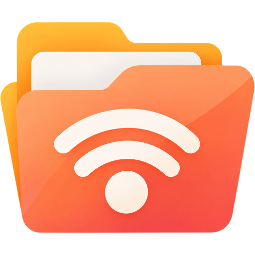

Browse photos, music and compatible videos from your phone, tablet or computer on the big screen. Just open your browser, choose your files or folders, and enjoy them on Roku over local Wi-Fi. No media server software or companion app required.
Launch FolderCast to see the connection QR code and browser address.
On the same Wi-Fi, scan the code or enter the address on your phone, tablet or computer. Select files or folders.
Browse your chosen folders and play photos, music or compatible videos using the Roku remote.
Bring family albums, travel memories and celebrations from your device to the living-room TV.
Pick a music folder, browse the playlist and enjoy your collection from the couch.
Open compatible personal videos without building a separate media-server library.
Browse selected folders from more than one phone, tablet or computer in a single Roku-friendly view.
No. FolderCast does not require you to install or configure separate media-server software. Open the connection page in a compatible browser on your phone, tablet or computer and select what you want to share. Keep that browser device available while using its media on Roku.
No separate FolderCast companion app is needed. Use a compatible web browser to connect and choose your files or folders.
Open FolderCast on Roku, scan the QR code or enter the displayed address in a browser on your phone, tablet or computer, then select files or folders to browse on TV.
Yes. Add multiple folders or individual files and connect multiple phones, tablets or computers. FolderCast organizes shared media by device and folder.
Local media sharing uses your private Wi-Fi network and does not require a FolderCast cloud library or account. Your Roku and sharing device must be on the same local network. Internet access may still be required for installation, subscriptions or Roku account services.
You can try FolderCast for free with access to the first 5 subfolders and first 20 playable media files in each folder, in displayed filename order. A Roku-billed subscription unlocks full eligible browsing.
No media server to configure. No companion app to install. Choose your media in a browser and enjoy it on Roku over your local Wi-Fi.